Giardinieri a Flero · in tutta la provincia di Brescia
Il tuo giardino sempre bello.
Ci pensiamo noi.
Una squadra giovane, guidata da un perito agrario iscritto all'albo: dal primo sopralluogo alla cura di ogni stagione, il tuo verde è in buone mani.
Dal 2023 · Flero (BS) · sopralluogo e render prima di iniziare
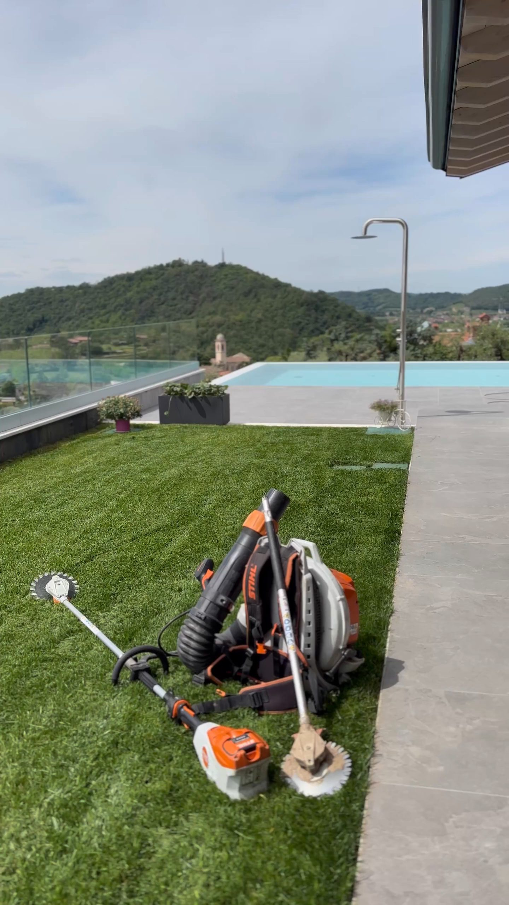
Dai nostri cantieri
Lasciati ispirare dai nostri giardini.
Scorri, tocca una foto o un video per vederlo in grande.
Chi siamo
Il verde è il nostro mestiere. Flero è casa nostra.
Astra Gardens nasce a Flero nel 2023 da un gruppo di diplomati e laureati in agraria. Ci unisce la passione per il verde e un'idea semplice: un giardino deve essere bello, sano e facile da vivere.
Ogni progetto parte dall'ascolto: studiamo lo spazio, la luce e il terreno, e prima di iniziare ti mostriamo il risultato con un render. Poi lo realizziamo e lo curiamo nel tempo, stagione dopo stagione.
Servizi
Il tuo giardino dalla A alla Z, chiavi in mano.
Dal sopralluogo alla manutenzione, con la nostra squadra e gli artigiani di fiducia per ferro, opere edili e luci: ti consegniamo il giardino finito.
-
Il lavoro inizia dal tuo giardino: misuriamo lo spazio, guardiamo esposizione, terreno e piante esistenti, e raccogliamo i tuoi desideri.
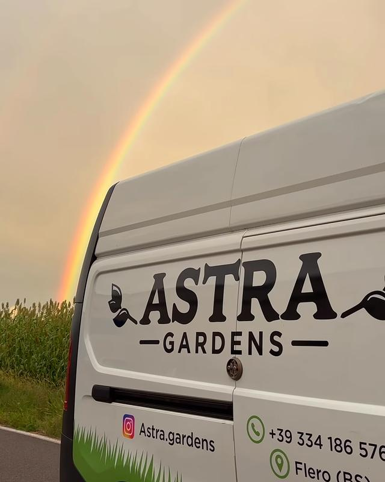
-
Disegniamo il giardino su misura e te lo mostriamo con un render realistico: vedi il risultato prima ancora di iniziare.
Il render è un'immagine indicativa: forme, colori e dimensioni delle piante reali possono differire, soprattutto nei primi mesi.
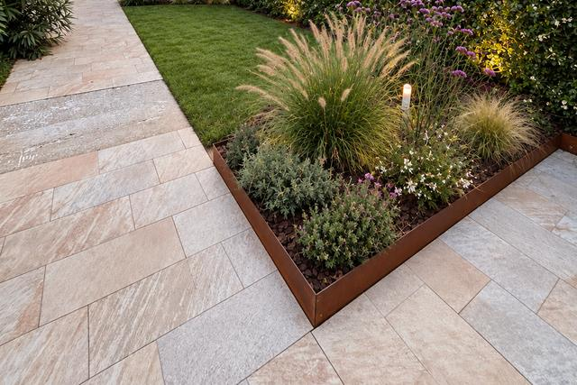
Immagine di progetto · render IA
-
Scegliamo con te le piante giuste per luce, terreno e tempo che vuoi dedicare al giardino: belle oggi e sane negli anni.
-
Un preventivo scritto e chiaro in ogni voce, con le condizioni nero su bianco prima di iniziare.
-
Scavi, terra nuova, aiuole, bordure e piantagioni: costruiamo il giardino con mezzi nostri e la nostra squadra.
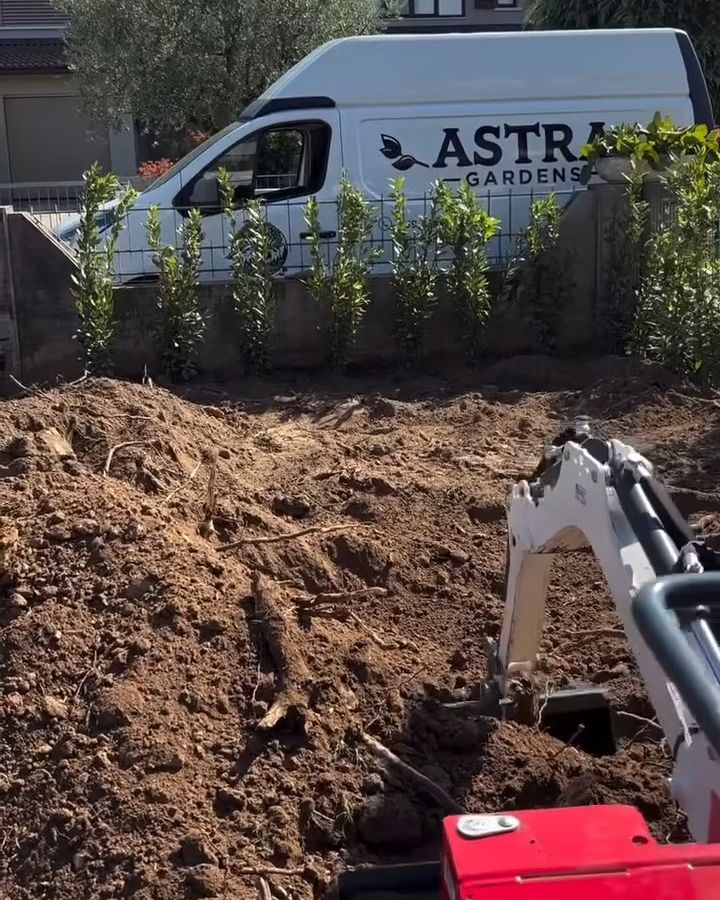
-
Bordure in acciaio corten su misura, fatte dai nostri fabbri di fiducia: linee nette tra prato, aiuole e ghiaia.
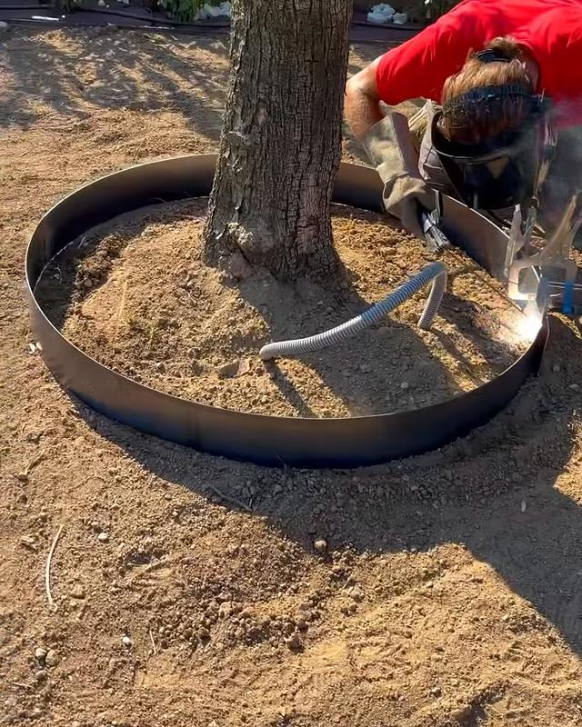
-
Recinzioni, cancelli, muretti, scalini e vialetti: con i nostri artigiani di fiducia portiamo a termine anche le opere intorno al verde.
-
Terreno preparato e livellato, zolle posate con cura: un prato verde e uniforme.
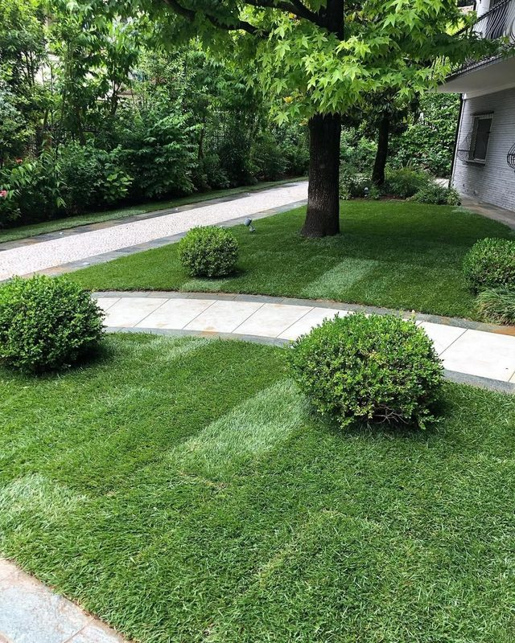
-
Posa di erba sintetica di qualità dove il prato vero fatica: terrazzi, zone d'ombra, bordi piscina.
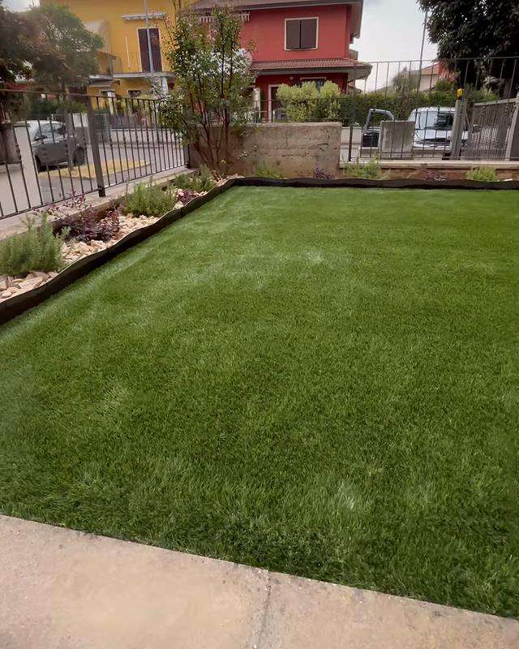
-
Impianti a goccia e irrigatori a scomparsa, studiati zona per zona: l'acqua giusta, al momento giusto.
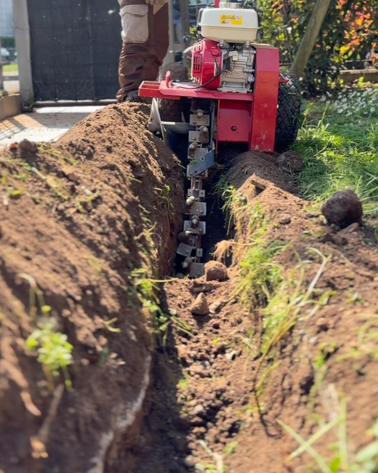
-
Luci per vialetti, alberi e aiuole: il giardino si vive anche la sera.
-
Impianti a nebulizzazione per vivere il giardino la sera: progettati e installati da noi, con la manutenzione nel tempo.
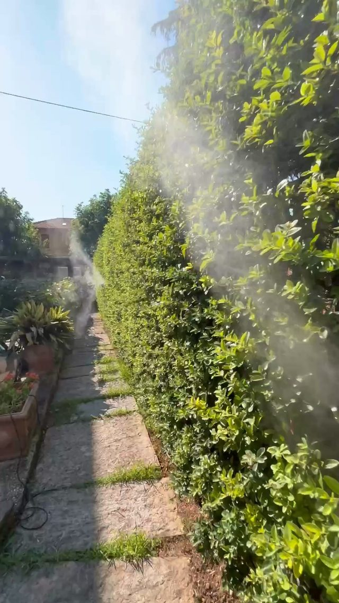
-
Fioriere, vasi, bordure e complementi scelti insieme a te per completare il progetto.
-
Saliamo sulla pianta con funi e imbrago o con la piattaforma aerea, e potiamo con tagli puliti che rispettano la forma naturale.
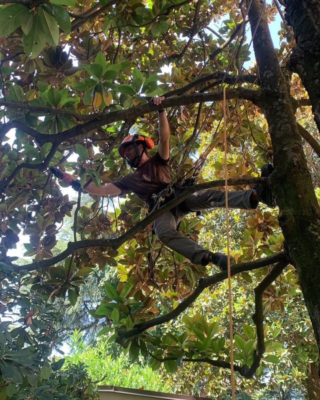
-
Alberi alti smontati a sezioni, in sicurezza, anche negli spazi più stretti, con il cantiere lasciato pulito.
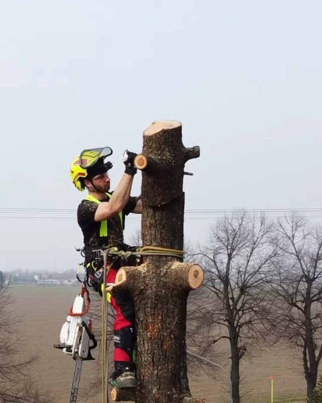
-
Potatura a vaso e forme ornamentali come il pon pon, per ulivi sani ed eleganti.
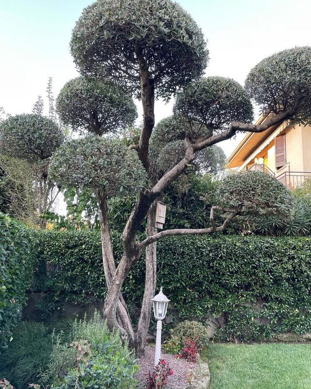
-
Installazione e cavo perimetrale: il prato si taglia da solo, ogni giorno, in silenzio.
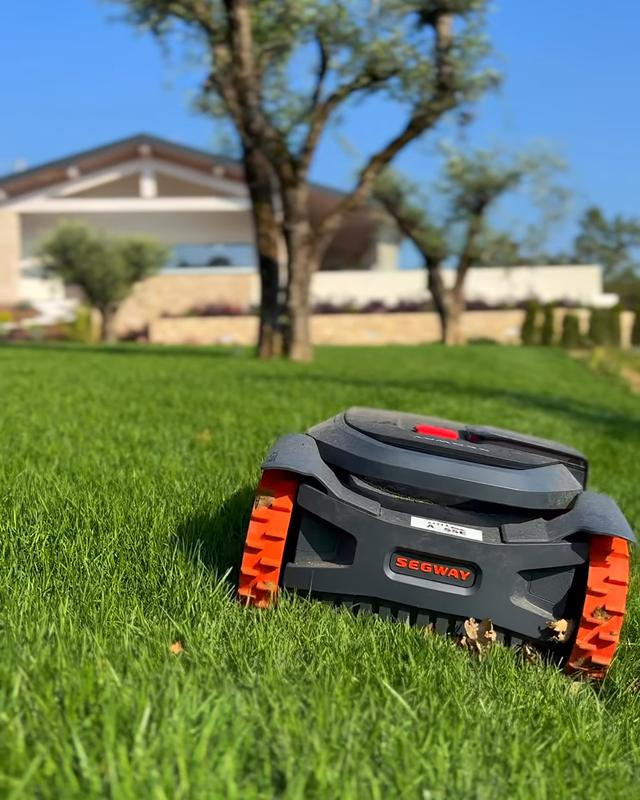
-
Prato, siepi, aiuole e pulizia con un calendario su misura: il tuo giardino resta curato in ogni stagione.
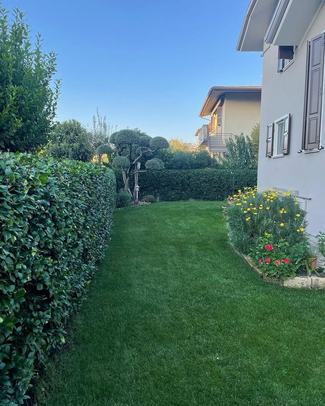
I nostri lavori
I nostri lavori più belli.
-
Vista sulle colline
Un giardino con piscina che si apre sul paesaggio: prato, graminacee e bordure curate per valorizzare la vista.
-
Linee in corten
Bordure in acciaio corten su misura e ghiaia drenante: geometrie pulite, belle in ogni stagione.
-
Il cedro, in sicurezza
Abbattimento in tree climbing di un cedro alto, smontato a sezioni con funi e imbrago.
-
Un prato nuovo
Prato in zolla lungo la siepe: terreno livellato e posa curata, per un verde uniforme.
-
Ulivi scolpiti
Potatura ornamentale a pon pon: ulivi trasformati in sculture verdi.
-
Ombra fiorita
Un'aiuola pensata per la mezz'ombra: piante scelte con cura, pacciamatura e bordo netto.
Prima e dopo
Com'era. Come diventa.
Trascina il cursore e guarda il giardino cambiare.
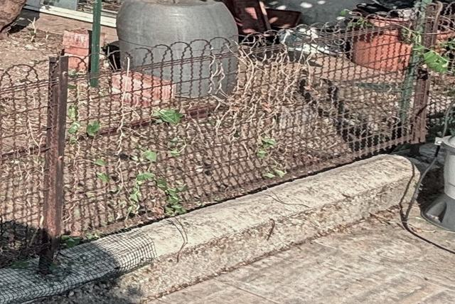
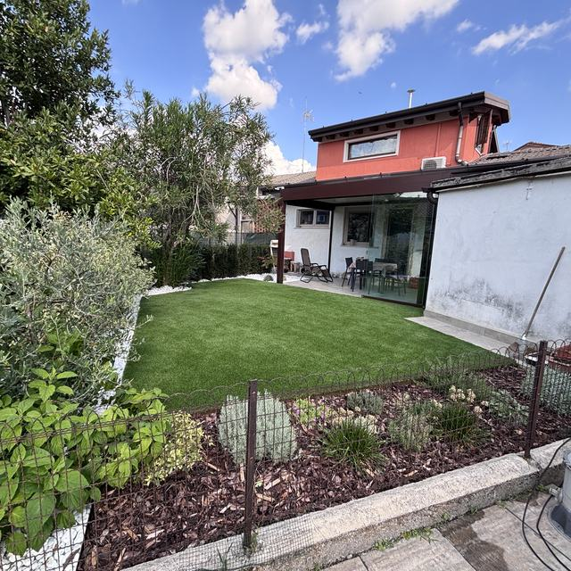
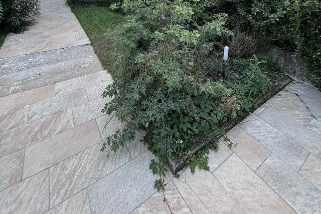
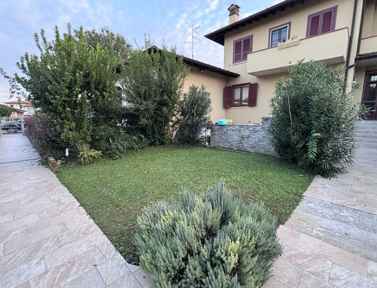
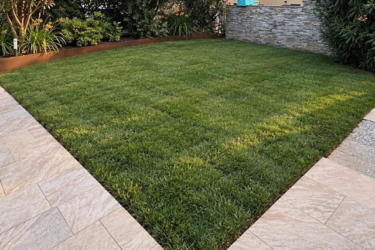
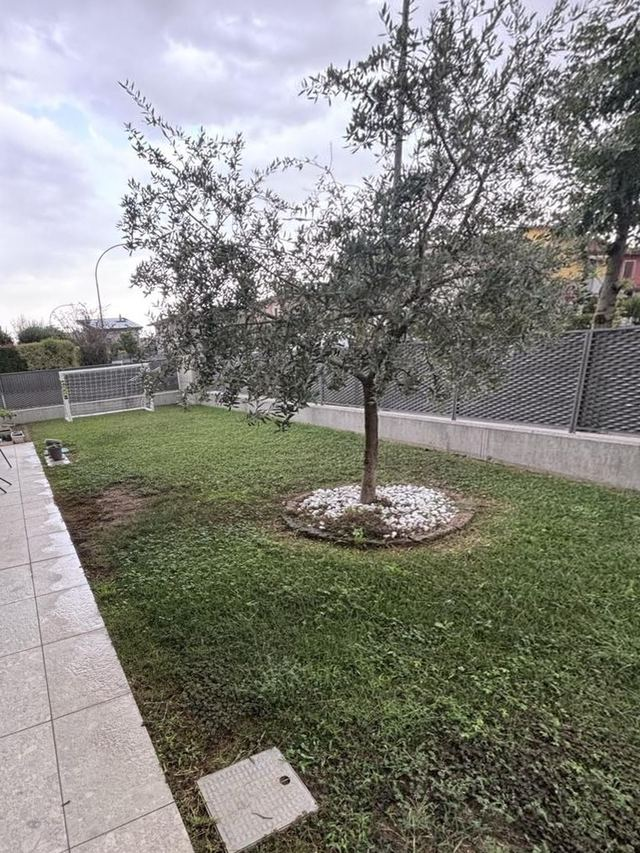
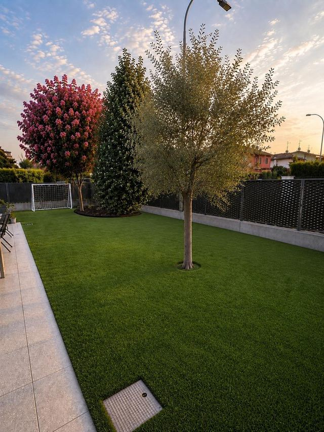
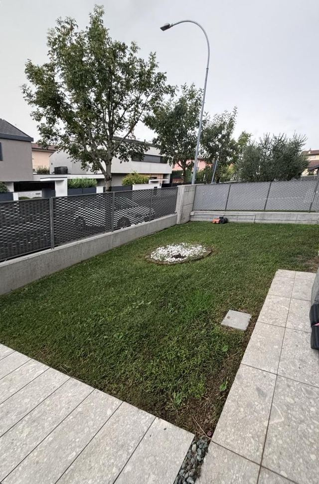
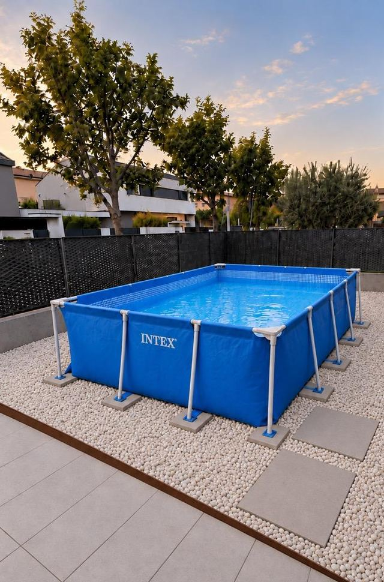
Siamo a Flero. Lavoriamo in tutta la provincia di Brescia.
Raccontaci il tuo giardino con una foto su WhatsApp: ti rispondiamo con un'idea e fissiamo un sopralluogo.
Scrivici su WhatsAppIn sede riceviamo solo su appuntamento.